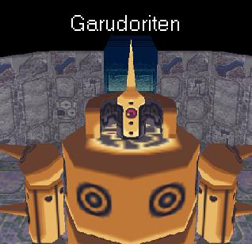

Overview
Garuditoren first appears as a cylindrical object found right before you grab the refractor in Lake Jyun's ruins. It's funny how painfully obvious it is that it's a reaverbot, and even funnier that they pulled the exact same trick with Rimblemenji in Legends 2 (although it was better executed).
The only spot you can hit him on his armored body is his tiny head (typically), so damaging him becomes a chore here. He's actually based off of Tatsunoko's own Gold Lightan, and if you've played any of Tatsnunoko Vs. Capcom, you'll definitely notice the similarities in their fighting styles.
Movelist
Heavy Tackle
Garudoriten walks around the battlefield during the fight. At random intervals, he may decide to do a rather awkward-looking tackle. This covers a lot of ground, surprisingly, so you want to keep moving. Jumping away works fine when avoiding this move.
Gold Kick
Should you stray close to the reaverbot, he will proceed to use a rather lame-looking soccer-style kick attack. It's range isn't too great, but it is rather quick and unexpected. It's best that you stay away from him so that you avoid the risk of being kicked.
Spin-Jump Shockwave
Occasionally, Garudoriten will want to position himself in the center of the arena. To do this, he will make a rather large jump, which results in a shockwave upon landing. Simply jump or do a cartwheel to avoid it.
Good Weapons to Use
Machine Buster
There really is no downside to you using this weapon. You'll get more shots in than you would with the buster, as you can repeatedly jump and shoot him in his rather small noggin.
Synopsis
He's really not too difficult; his unorthodox fighting style is pretty hard to get used to. His weak spot is also in an annoying location, which can make the fight drag on for a while. You gotta love the whole Gold Lightan reference, though. Capcom's been pulling Tatsunoko references for quite a while, and this is just another one they can chalk up. I'd have to give Garudoriten a 9/10.